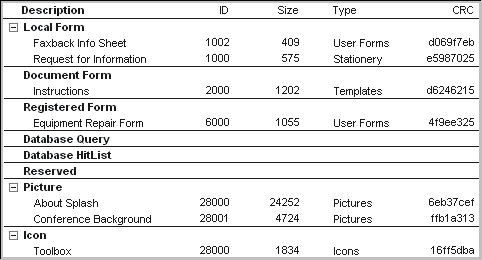

FirstClass 8 Designer
Contents
Notices
You must accept the FirstClass License Agreement before you can use this product. If you do not accept the terms of the License Agreement, do not install the software and return the entire package within 30 days to the place from which you obtained it for a full refund. No refunds will be given for returned products that have missing components.
Information in this document is subject to change without notice. Certain features and products described in this document may not be currently available in all geographic regions. Distribution or reproduction of this document in whole or in part must be in accordance with the terms of the License Agreement.
All rights reserved. FirstClass, Centrinity, Livelink, Open Text and other trademarks and the associated logos used herein are trademarks of Open Text Corporation and/or its subsidiary used under license. All other trademarks are property of their respective owners.
This edition applies to Version 8.0 of FirstClass and to all subsequent releases and modifications until otherwise indicated.
Technical support
Telephone technical support is available to registered administrators at the following numbers:
Toll free in North America: 1-800-346-9108
Toronto: 905-762-6060
International: 0800 9 808808 (UK) or +44-1494-679749 (outside UK)
Online support questions may be directed to support@firstclass.com (international support at intl_fcsupport@opentext.com).
Overview
This book describes how to use FirstClass® Designer to customize FirstClass.
FirstClass uses forms and other resources (pictures, icons, and sounds). A full set of default resources is supplied with FirstClass.
FirstClass Designer lets you create customized resources to suit your organization's needs. If a customized resource corresponds to a default FirstClass resource, the customized resource will override the default resource.
Customizing resources
You are already aware of settings files as the mechanism by which users connect to servers. These files can also store resources, and it is settings files that you work with using FirstClass Designer.
To customize resources, you use FirstClass Designer to:
• customize forms that already exist in a settings file
• add forms and other resources to a settings file
• remove unnecessary resources from a settings file.
Adding functionality to FirstClass
You can add functionality to the FirstClass client by creating forms that:
• communicate with external databases
• render various graphics formats in FirstClass
• enable users to add customized buttons to the FirstClass toolbar.
Distributing customized resources
After you have customized your resources, you need to make them available to your users. You can distribute customized resources by placing them on your server or by distributing your customized settings file.
For information on distributing customized resources, see the chapter on distributing resources.
Rendering forms to the web
With the FirstClass Internet Services component, you can use FirstClass HTML templates to render customized forms to the web.
For a brief introduction to these templates, see the chapter on customizing for the web. Most of the information on templates is in our other online books.
About this book
This book is intended for administrators or FirstClass RAD developers who need to customize FirstClass forms and other resources.
Our assumptions about you
We assume that you are familiar with:
• FirstClass
• your operating system (Windows®, Mac® OS, or UNIX).
Documentation conventions
Each level of menu commands is separated by >. For example, the Clear command under the Edit menu is shown as Edit > Clear.
Text in italics represents a variable for which you must type your own value.
New in this version
• search for a specific field ID, or for duplicate field IDs
• field control enables the choice in one field to affect the behavior of another field (for example, dimming it)
• multifield selector lets users choose which field to display
• make collapsible groups display in their collapsed state initially, and list hidden fields in a summary line
• display field help in a tooltip instead of on the status bar
• Extended attribute on an "Attachments" field enables attached sound files to be played without a voice player pane
• Picture List and Menu List moved from Form menu to File menu
Downloading FirstClass Designer
To download FirstClass Designer:
1 Log into FirstClass Online (FCOL) using your registered account.
2 Go to the software downloads area.
3 Download the FirstClass Designer installer that applies to your operating system.
Starting FirstClass Designer
To start FirstClass Designer, double-click the FirstClass Designer icon:
Using FirstClass Designer
The basics about operating FirstClass Designer.
FirstClass Designer interface
FirstClass Designer uses conventions common to most graphics programs. If you have used an application such as CorelDRAW® or Adobe® Photoshop®, you are already familiar with these conventions.
There are often several ways you can perform the same task when using FirstClass Designer. For example, you can delete a selected field from a form by:
• choosing Edit > Clear from the menu
• pressing Delete on the keyboard
• opening the shortcut menu from the field, then choosing Clear.
To fit the size of a FirstClass Designer window to its contents, choose Window > Zoom Window (Windows) or View > Zoom Window (Mac OS, Mac OS X).
Working with the FirstClass Designer toolbar
The toolbar buttons provide shortcuts to a number of common FirstClass Designer tasks. These buttons are an alternative to choosing a task from the menu. As in FirstClass, you can see descriptions of buttons in their tooltips. If you are using Windows, you can also move the toolbar just as you would in the FirstClass client.
You can specify which buttons are on the toolbar, and the order in which they appear, just as you can in the FirstClass client. To access the Customize Toolbar form, choose View > Customize Toolbar.
Showing and hiding the toolbar
To show the toolbar, choose View > Show Toolbar.
To hide the toolbar, choose View > Hide Toolbar.
Displaying text on toolbar buttons (Windows only)
You can display icons and text or only icons on toolbar buttons just as you can in the FirstClass client. As is the case in the client, not all buttons have text.
To show icons and text, choose View > Display Icons and Text.
To remove text, choose View > Display Icons Only.
Showing and hiding the status bar
The FirstClass Designer status bar provides additional information about selected objects just as it does in the FirstClass client.
To show the status bar, choose View > Show Status Bar.
To hide the status bar, choose View > Hide Status Bar.
Files created by FirstClass Designer
When you first run FirstClass Designer, it creates a DESIGNER.fcd file. This file stores:
• your FirstClass Designer preferences
• customized toolbars
• the most recently opened settings files
• the windows you had open when you last quit FirstClass Designer.
Selecting FirstClass Designer's "Autosave" or "Create backup" preference also generates files. For information on these files, see the information on updating a settings file.
Setting FirstClass Designer preferences
You can customize how FirstClass Designer behaves in a number of ways. For example, you can specify what to do when duplicate resources are detected, and whether to automatically save your work.
To change a preference:
1 Choose Edit > Preferences.
 Mac OS X Mac OS X
Choose FirstClass® Designer > Preferences.
2 Update the Preferences form as required.
To change a preference without closing the Preferences form, click Apply.
Preparing a settings file
General information about settings files.
Opening a settings file
1 Choose File > Open.
To open a settings file that you have opened recently, choose File > Open Recent, then choose the settings file. To change the number of recently opened settings files listed on this menu, update your "Number of files to list" preference.
If you are using Windows, you can also open a settings file by dragging it into the FirstClass Designer window.
2 Locate and open the settings file you want to change.
The list of resources contained in the settings file opens.

The resource list shows:
Description
The resource name.
ID
The resource ID.
Size
The resource size in kilobytes.
Type
The type of resource.
CRC
Indicates whether the resource has been updated. This is useful information if you share the task of updating resources with others, and need to know if you have the latest version.
You can expand or collapse resource categories by clicking the tree view buttons (Windows) or disclosure triangles (Mac OS, Mac OS X).
Creating a settings file
Usually, the easiest way to create a settings file is to copy an existing one and modify it. However, you can create a new settings file from scratch. To do this:
1 Choose File > New.
2 Select the folder in which you want to save the settings file, and specify a file name.
If this file will be used with the Windows client, its name must have the extension .fc. Files used exclusively with the Mac OS client do not require an extension.
A new resource list opens for this settings file.
Updating a settings file
You can add pictures, icons, and sounds to the settings file, and add or customize forms. When you are finished customizing the settings file, choose File > Save to save your changes.
To undo all changes you have made to the settings file in the current session, choose File > Revert to Original. The settings file reverts to the version that you started with at the beginning of your session.
Note
For the Revert to Original command to work, you must have "Create backup" selected in your preferences.
Saving a settings file automatically
You can set several FirstClass Designer preferences that will save a settings file automatically:
Autosave
Saves your settings file periodically as you work on it. Specify the interval between saves at "Interval".
The temporary file created when Designer does an automatic save begins with ~. If your system goes down while you are working in FirstClass Designer, you can rename this file to act as a replacement for your settings file. This will save all the changes you made prior to the latest automatic save.
For FirstClass Designer to save changes to a settings file automatically, you must have "Autosave" selected before you open the settings file.
Create backup
Creates a duplicate of a settings file whenever you open it. The duplicate has a .bak extension.
This allows you to discard all changes you made in your current session and revert to the version of the settings file with which you started the session.
Note
If you are short on disk space, consider how much extra space will be required when these preferences are selected. Selecting one of these preferences causes the settings file to require twice as much disk space. Selecting both preferences causes the settings file to require three times as much disk space.
Importing resources into a settings file
To use pictures, icons, and sounds in a settings file, you must first import these resources or store them on the server.
Import methods available using Windows
If you are using Windows, you can:
Importing sound resources from files
In the Windows environment, this is the only way to import sounds. Sound files must be in .wav format.
To import a sound resource:
1 Choose File > Import Sound.
2 Select the file containing the sound you want to import.
FirstClass Designer adds the imported sound to your settings file's resource list. The sound is assigned a unique resource ID and the resource name is the name of the .wav file.
If you want to change the values assigned by FirstClass Designer, select the sound resource, choose File > Properties, then update these fields:
Resource name
The name you want to assign to the sound.
You can generally name the resource what you want; however, to assign a sound to a window, you must use the window name. For more information, see the chapter on working with sounds.
Resource ID
A resource ID between 28000 and 28999, to avoid overriding a default FirstClass resource.
To assign a sound to an action, you must use a specific resource ID. For more information, see the chapter on working with sounds.
Importing icons from files
Icon files must be in .ico format.
To import an icon, drag the .ico file containing the icon to the open settings file.
Note
In the Windows environment, this is the only way to import transparent icons and have them remain transparent.
Importing resources using the clipboard
You can use the clipboard to copy pictures and icons with the .bmp format, and paste them into a settings file.
To import a resource using the clipboard:
1 Open the resource you want to import, using an application that lets you select and copy the resource.
2 Select the resource or the part of the resource you want, and copy it to the clipboard.
3 Use FirstClass Designer to open the settings file into which you want to import the resource.
4 Choose Edit > Paste.
You may be asked whether you are importing a picture or icon. Click the appropriate resource type at the Bitmap Conversion dialog box.
FirstClass Designer adds the resource to the appropriate category in your settings file's resource list. The resource is assigned a unique resource ID and the resource name is blank.
5 Choose File > Properties with the resource selected.
6 Update the following fields:
Resource name
The name you want to assign to the resource.
You can generally name the resource what you want; however, to assign a sound to a window, you must use a specific name. For more information, see the chapter on working with sounds.
Resource ID
If you want to change the resource ID assigned by FirstClass Designer without overriding a default FirstClass resource, specify a resource ID between 28000 and 28999.
To use an icon to replace a default system icon, or assign a sound to an action, you must use specific resource IDs. For more information, see the chapters on working with icons and sounds.
Copying resources between settings files
To copy a resource from one settings file to another:
1 Open the settings file containing the resource (the source settings file).
2 Open the settings file to which you want to copy the resource (the target settings file).
3 Select the resource in the source settings file's resource list.
To select more than one resource at a time, press Control while you click each one.
4 Drag the resource from the source to the target settings file while pressing Control.
If you drag the resource without pressing Control, the resource is moved rather than copied.
If you do not have room on your screen to display both resource lists at once, you can use the standard Copy and Paste commands instead of dragging.
Import methods available using Mac OS/Mac OS X
If you are using Mac OS/Mac OS X, you can:
Importing resources from a file
In the Mac OS and Mac OS X environments, you can import resources from a file that has the resources in the resource fork (a file that can be opened in ResEdit). Pictures must be in PICT format, icons in CICN (color icon) format, and sounds in SND format.
To import resources from a file:
1 Choose File > Import Resources.
2 Select the file containing the resources you want to import.
FirstClass Designer adds the imported resources to your settings file's resource list.
3 Select each imported resource and choose File > Get Info.
4 Update the following fields:
Resource name
The name you want to assign to a resource.
You can generally name the resource what you want; however, to assign a sound to a window, you must use a specific name. For more information, see the chapter on working with sounds.
Resource ID
If you want to change the resource ID assigned by FirstClass Designer without overriding a default FirstClass resource, specify a resource ID between 28000 and 28999.
To use an icon to replace a default system icon, or assign a sound to an action, you must use specific resource IDs. For more information, see the chapters on working with icons and sounds.
Importing resources using the clipboard
You can use the clipboard to copy sounds, pictures, and icons, and paste them into a settings file. Pictures must be in PICT format, icons in CICN (color icon) format, and sounds in SND format.
Notes
High resolution PICTs will be blank when viewed on Windows platforms if you just paste them directly into the settings file. To import a high resolution PICT that will work on all platforms, you must first paste it into a FirstClass message or document, then copy it back to the clipboard from there. You must also do this if you are using Mac OS X, or the picture will only be visible on Mac OS X.
If you use Windows both to create a picture and to paste it into a settings file, the picture is automatically converted to a PICT with 256 colors.
To import a resource using the clipboard:
1 Open the resource you want to import, using an application that lets you select and copy the resource.
2 Select the resource or the part of the resource you want, and copy it to the clipboard.
3 Use FirstClass Designer to open the settings file into which you want to import the resource.
4 Choose Edit > Paste.
FirstClass Designer adds the resource to the appropriate category in your settings file's resource list. The resource is assigned a unique resource ID and the resource name is blank.
5 Choose File > Get Info with the resource selected.
6 Update the following fields:
Resource name
The name you want to assign to the resource.
You can generally name the resource what you want; however, to assign a sound to a window, you must use a specific name. For more information, see the chapter on working with sounds.
Resource ID
If you want to change the resource ID assigned by FirstClass Designer without overriding a default FirstClass resource, specify a resource ID between 28000 and 28999.
To use an icon to replace a default system icon, or assign a sound to an action, you must use specific resource IDs. For more information, see the chapters on working with icons and sounds.
Copying resources between settings files
To copy a resource from one settings file to another:
1 Open the settings file containing the resource (the source settings file).
2 Open the settings file to which you want to copy the resource (the target settings file).
3 Select the resource in the source settings file's resource list.
To select more than one resource at a time, press Command while you click each one.
4 Drag the resource from the source to the target settings file while pressing Option.
If you drag the resource without pressing Option, the resource is moved rather than copied.
If you do not have room on your screen to display both resource lists at once, you can use the standard Copy and Paste commands instead of dragging.
If there are duplicate resources
When you import resources from a file (Mac OS, Mac OS X) or copy resources between settings files, FirstClass Designer may encounter a resource already in the settings file that is the same type of resource, with the same resource ID, as a resource you are importing. In this case, FirstClass Designer will do one of the following, depending on your "Duplicate resources" preference:
• assign the resource being imported a unique resource ID
• replace the existing resource with the resource being imported
• ask you how to handle the resource being imported.
If you are asked how to handle the resource being imported, you will see a dialog like this:
To assign a unique resource ID to the new resource, click Unique. If another duplicate resource is encountered, you will be asked how to handle it.
To replace the old resource with the new one, click Replace. If another duplicate resource is encountered, you will be asked how to handle it.
To avoid importing the new resource, click Skip. If another duplicate resource is encountered, you will be asked how to handle it.
To assign all duplicate resources unique resource IDs as they are imported, with no further prompting, click Unique All.
To replace all old duplicate resources with the new ones, with no further prompting, click Replace All.
Guidelines for good results
Pictures
• To get a picture that looks the same on any platform, dither it to 8-bit system palette colors (256 colors), and use a resolution of 72 dpi.
• Avoid dark colors in pictures that may be used as backgrounds, because unread flags and some icons do not show up well against them.
• Make sure your picture fits on the lowest resolution, smallest screen used in your organization.
Icons
• Although most icons are 32 by 32 pixels in size, FirstClass Designer supports icons of other sizes and shapes.
• To make an icon transparent using Windows, import it from a .ico file.
To make an icon transparent using Mac OS/Mac OS X, open it in ResEdit, copy the color graphic, then paste it in the mask.
Sounds
• To be sure of sound resources working on all platforms, use 8-bit uncompressed mono, with a sampling rate no higher than 22khz.
Viewing picture and icon resources
To see all the picture resources in a settings file, including their resource IDs, choose File > Picture List.
To see all the icon resources in a settings file, including their resource IDs, choose File > Icon List.
Working with pictures
You can use customized pictures that are in settings files or stored on the server when you are working with the fields on forms.
In addition, users can select a picture as a background for their Desktops, Mailboxes, or other containers while running FirstClass. Pictures are displayed actual size and placed in the upper left corner when they are selected as backgrounds. Users can change this positioning.
Providing a default Desktop picture
You can make a picture the default background for users' Desktops. The procedure for doing this varies depending on whether users are new or existing:
• For new users, place the background picture on the All Users Model Desktop.
• For existing users, use FirstClass scripting or open users' Desktops and specify the background image.
Working with icons
Each FirstClass object has an icon associated with it. In addition, many system resources have icons associated with them. For example, the status field on the FirstClass Login form displays icons representing the login statuses.
This chapter explains how to assign icons to objects and how to use your custom icons to replace the default system icons. For information on putting icons on forms, see the chapter on field types.
Note
If you choose an icon that is stored on the server rather than in the settings file you are working with, you will not see it in FirstClass Designer. For certain fields, this means that you must type the icon's resource ID rather than picking the icon from a popup menu.
If you want to use custom icons with the Internet Services component of FirstClass, you must copy these icons to the icons.fc settings file used by Internet Services. Just update the icons.fc settings file; do not replace it, or you will lose the default FirstClass icons.
Replacing default icons
We do not recommend that you replace the default FirstClass icons, such as the unread flag and the status icons in the FirstClass Login form. If you must do so, assign your new icon the resource ID of the default icon you want to replace.
Caution
Do not replace the mail list icon (resource ID 23013) if you want users to be able to sync with Palm™ Computing connected organizers.
To see the default icons and their resource IDs, open the Example.fc file that ships with FirstClass Designer.
When multiple settings files make sense
If you will be sending users your settings file, and you expect this file to be used on computers with different displays, you may want to make multiple settings files with icons designed to appear best on each display. The guidelines for optimizing pictures for different displays also apply to icons.
Remember that some users might not use your settings file. Try FirstClass without your icons to make sure it is still usable.
Working with sounds
FirstClass allows you to assign sounds to an action or to a window. FirstClass provides a default set of sounds. In addition, you can assign custom sounds that are in settings files.
Assigning sounds to actions
FirstClass includes default sounds for certain actions, such as receiving a new message. You can customize a sound by assigning your new sound the resource ID of the action.
To see what actions have default sounds, and check their resource IDs, open the Example.fc file that ships with FirstClass Designer.
Note
There is no sound supplied for logoff, but you can assign a sound to this action by using resource ID 137.
Assigning sounds to windows
You can configure a sound to play when users open a particular window. To do so, assign a resource name that matches the name of the window. When assigning a sound to a window, the value you choose for the resource ID is not important, as long as it is in the range of 28000 to 28999, so that it does not conflict with any of the default sounds' resource IDs.
For example, to play a sound when users open their Desktops, give the sound the resource name Desktop. To play a sound when users open a conference called News, give the sound the resource name News.
You can also play a sound when users open a message by giving the sound the same resource name as the message's subject. For this to work, the sound resource must be stored on the user's computer (for example, in their settings file or Images folder).
When multiple settings files make sense
Sounds use a lot of disk space. You may want to create a second settings file without the sounds for users who do not want to download a large settings file.
Other resource categories
The resource list for a settings file contains several categories not yet described:
• Strings
• Single String
• Login Settings.
Login Settings can contain one resource. Although you can create this resource by choosing Form > New > Login Settings, and edit the file as a straight text file, we recommend that you specify login settings using the FirstClass client rather than FirstClass Designer.
The only categories that may be of use to you are Strings and Single String. They are only applicable if you have a database extension that can make use of these strings.
Adding strings
The Strings and Single String categories both contain strings, which are used for text such as menus and error messages. The Strings category contains string tables that can hold multiple strings, each identified by an index number. The Single String category stores each string as a separate resource.
String resource IDs and index numbers must match the string values in the client.
To add a string resource
1 Choose Form > New > String Resource or Single String Resource.
2 Type the string (maximum 255 characters), then close and save the resource.
The Properties form opens.
3 Update the following fields:
Resource name
The name you want to give this resource.
Resource ID
The resource ID for this resource.
You can add a maximum of 255 strings to a string resource.
To add a string to an existing string resource
1 Double-click the resource to open it.
2 Choose Fields > Add String.
3 Type the string.
To insert a string into an existing string resource
1 Double-click the resource to open it.
2 Select the index number for the string that is immediately before the place where you want to insert the new string.
3 Choose Fields > Add String.
4 Type the string.
Editing strings
To edit a string, double-click the resource, then make your changes.
Deleting strings
To delete a string from a Strings resource, select the index number beside the string, then press Delete.
Overriding default file mappings
Windows identifies files based on their file extensions. Mac OS and Mac OS X identify files based on their built-in file types and creator information (the applications that created them). FirstClass lets you download and view the same file on either platform by mapping Windows file extensions and Mac OS/Mac OS X file types/creator information.
When a Mac OS/Mac OS X file is downloaded to a Windows machine, the Windows client adds a file extension based on the Mac OS/Mac OS X file type and creator information.
When a Windows file is downloaded to a Mac OS/Mac OS X machine, the Mac OS/Mac OS X client adds file type and creator information based on the Windows file extension.
To map extensions, file types, and creator information, the client uses a string table that is stored within it. You can override these mappings by creating a replacement string table STR#10 in a settings file or the langxxx.rez file (an optional file used with localized clients). Be sure to include all of the mappings defined in the resource that is shipped with the client. These mappings are also supplied for your information in the Example.fc settings file that ships with FirstClass Designer.
The string format is
xxx=cccctttt
where
xxx is the Windows file extension
cccc is the Mac OS/Mac OS X creator tag
tttt is the Mac OS/Mac OS X file type tag.
You can have multiple strings with:
• the same extension (if several Mac OS/Mac OS X types map to the same Windows extension)
• the same file type/creator information (if several Windows extensions map to the same Mac OS/Mac OS X file type/creator information).
Distributing resources
You can distribute customized resources to your users in several ways:
• put the resources on your server so that they are available to everyone who connects to this server
Resources can be stored in the Multi-Site Setup/FC Resource Registry conference. They can also be stored in an individual container's Rules & Resources folder.
• make a settings file containing the resources available to users by mailing it to them or putting it in a container.
Users can then use this settings file to update their own settings files.
Note
You must use a settings file to distribute custom sounds. Sounds cannot be accessed from the server, except by database extensions.
To make sure your users are seeing the most up-to-date versions of resources, we recommend using containers' Rules & Resources folders. FirstClass keeps track of the versions of resources in these folders, and automatically updates users' resources if they are older than the versions in the folders. This avoids the need for users to flush their caches to force the download of updated resources.
Putting resources in the FC Resource Registry
To put customized resources in the FC Resource Registry:
1 Download the appropriate .rez files from the FC Resource Registry conference.
2 Open the files in FirstClass Designer.
3 Update the resources in the files as required.
Be careful about removing old resources, unless you replace them with resources that have the same resource IDs. FirstClass may not function properly if you simply remove resources.
4 Upload the updated files back to the FC Resource Registry.
5 Protect the new files.
6 Unprotect and delete the corresponding old files.
For more information
For greater detail on how to distribute resources, see the information about FirstClass resources in our administration help.
Preparing a form
This chapter explains how to create, save, and test customized forms. A custom form can supplement the default FirstClass forms or act as a replacement for a default form.
If you want to use a custom form with the Internet Services component of FirstClass, you must also create an HTML template of this form in the .Templates folder. For details on creating an HTML template, see the chapter on customizing for the web and our other online books.
While working with forms in FirstClass Designer, you can switch between a 3D and a non-3D view. To do this, choose View > 3D Look. To change the default view for all forms, select "3D look" in your FirstClass Designer preferences.
The default forms
FirstClass contains a default set of forms that are available to all users. Copies of these forms are contained in the Example.fc settings file that ships with FirstClass Designer. You can use these copies as bases for your customization.
Each form has a unique resource ID. FirstClass uses this ID to ensure, for example, that a message form used by a recipient to view a message is the same as the form used by the sender to create the message. When you open Example.fc in FirstClass Designer, you see the resource IDs for all the default forms.
Editing existing forms
To edit an existing form:
1 Open the settings file containing the form in FirstClass Designer.
2 Double-click the form in the resource list to open it.
3 Edit the form as required.
Moving the split bar
The split bar separates the message or document header from the body. You can drag the split bar up and down just as you do in the FirstClass client.
You can also have forms that consist entirely of a header (if you do not want users adding free-form text in a body) or entirely of a body (if there is no information that makes sense in fields, or you want to hide the header by default).
To make a form show just a header, turn off the split bar by choosing Form > Split Bar. You can choose this command again to turn the split bar back on.
To make a form show just a body, drag the split bar completely to the top.
Copying existing forms
The easiest way to create a new form is to copy an existing form that has many of the fields you need. You can copy an existing form from one settings file to another just as you would copy any other resource. For instructions, see the information on copying resources between settings files.
Creating new forms
To create and open a new form:
1 Use FirstClass Designer open the settings file to which you want to add the form.
2 Choose Form > New, then the category to which you want to add the form.
For descriptions of form categories, see the information on the "Range" field.
Saving forms
To avoid losing your work, you should save the form frequently. You can save forms in the following ways:
• To save the current form and continue editing, choose File > Save.
• To save all open forms and continue editing, choose File > Save All.
• To save the form when you are finished editing, close it and click Save.
To save forms automatically when you close them, select "Save form when closed" in your preferences. Be cautious about selecting this preference, because it removes the option to discard your changes to a specific form.
Assigning form attributes
When you close a new form, the Properties (Windows) or Info (Mac OS, Mac OS X) window opens. Assign form attributes in this window.
Note
To access this window for an existing form, select the form, then choose File > Properties (Windows) or Get Info (Mac OS, Mac OS X).
Type
Choose one of the following:
• User Form
Includes the form in the client's Message > New Message Special or File > New Document Special menu.
• Form Stationery
Makes the form either stationery or the main form for a database extension. The form does not appear in menus.
• Toolbar
Uses the form as a category in the Customize Toolbar form in the FirstClass client.
• Form Template.
For all other forms. The form does not appear in menus. This is commonly used for additional forms for a database extension.
Name
The name that appears in the forms list.
Title
The name that appears in the form's title bar.
Range
The category to which the form belongs. Each form category has a range of valid resource IDs associated with it. These are the available form categories:
• Local Form
Forms used only on your server. Use this category for forms that will only be used at one site, and not replicated to other sites. Valid resource IDs are 1000 to 1999.
User Forms with these IDs are displayed in the Message > New Message Special menu.
• Document Form
Forms that cannot be addressed. Valid resource IDs are 2000 to 2999.
User Forms with these IDs are displayed in the File > New Document Special menu.
• Registered Form
Forms used only on your server. These forms can be replicated to other sites. Valid resource IDs are 6000 to 6999.
• Database Query
Forms used to enter queries using database extensions or FirstClass RAD applications. Valid resource IDs are 8000 to 9999. For information on database extensions, see the chapter on adding functionality to FirstClass.
• Database Hit List
Forms used to return the results of database queries. Valid resource IDs are 10000 to 10999.
• Reserved
Reserved for FirstClass. Do not create forms of this type.
• Toolbar.
Forms used to add categories to the Customize Toolbar form. For more information on toolbar forms, see the chapter on adding functionality to FirstClass.
ID
The resource ID number. To automatically generate a unique resource ID, click Unique ID. If you assign your own resource ID, it must be valid for the form category you chose at "Range".
If you want this form to replace one of the default forms, type the resource ID of the default form.
Icon
The icon that will represent this form. To change the icon, click it, then choose a new icon from the popup menu. To delete the icon, press Delete.
Style
The way you want this form to appear. The value Standard is a normal window. Nonresizable is a window that users cannot resize. Floating is a window that is independent of the parent window, and is applicable when you run FirstClass in MDI mode. Floating (no frame) is like a splash screen.
Menu ID
Whether the form will include the FirstClass menu (Default Menu) or not (No Menu).
Character set
The character set of the text on the form. For English and Western European languages, accept the default.
Form position
The location of the top, bottom, left, and right sides of the form, as well as the form's height and width in pixels.
Testing forms
To see how a form will appear to your users, choose Form > Preview Form. This command displays the form without the field boundaries that are displayed when the form is in edit mode. While previewing the form, you can enter data into fields, click buttons, and display selection lists. To quit preview mode, choose Form > Preview Form again.
To see what a form will look like to users who do not have permission to edit it, choose Form > Protected Mode. To quit protected mode, choose this command again.
Customizing the FirstClass Login and Logoff forms
You can create customized versions of the FirstClass Login and Logoff forms. As for all other default forms, copies of these forms are contained in the Example.fc settings file, and you can customize these copies. Be sure to keep the same resource IDs as the originals.
Note
You cannot change the icons or titles of these forms. Any changes you make to these elements will not show up in the client.
Working with fields
Once you have created a form, you can add fields to it, then edit, move, and resize these fields. This chapter provides general information on working with fields. For information on adding specific types of fields, see the chapter on field types.
Adding fields
To add a field to a form:
1 Open the form.
2 Choose Fields, then the field category, then the type of field you want.
3 Click the form where you want the field to appear.
If you just click the form, the field is drawn in a default shape and size, which you can change. If you click and drag the cursor, you can shape and size the field before it is drawn.
Selecting fields
To work with a field, you must first select it by clicking it.
To select multiple fields, use one of the following methods:
• click the first field, then press Control (Windows) or Option (Mac OS, Mac OS X) while clicking the other fields
• click and drag the cursor to draw a selection box over the fields
Only fields that are entirely enclosed within the selection box are selected. To draw a selection box around fields within a group (a tab control or radio group), press Shift while dragging.
• click Next Field in the Field Attributes form to go to the next field on the form
• choose Edit > Select All to select all fields on a form.
A selected field has sizing handles:
Resizing fields
You can resize a selected field by:
• dragging the field's sizing handles
• using the arrow keys with Shift
To shorten the field by moving the bottom up, press Shift and the up arrow. To lengthen the field by moving the bottom down, press Shift and the down arrow. To narrow the field by moving the right edge to the left, press Shift and the left arrow key. To widen the field by moving the right edge to the right, press Shift and the right arrow key.
• using the commands in the Arrange > Size submenu
You can scale the field horizontally and vertically by specified percentages, size the field to fit the grid, size a field containing multiple items to fit the tallest, shortest, widest, or narrowest item, or size a picture or icon field to fit the actual size of the picture or icon.
• changing the field's "Field position" attributes.
Moving fields
You can move a selected field by:
• dragging the field to its new location
• nudging the field one pixel at a time by pressing the appropriate arrow key
• changing the field's "Field position" attributes
• aligning the field
• changing the field's draw order.
You can also move fields from one form to another.
Using the grid
FirstClass Designer has a grid that helps you place and align fields. The grid does not appear on the final form.
To display the grid, choose Form > Show Grid. To hide the grid, choose this command again.
To force objects to align with the grid when you move them, choose Form > Snap to Grid.
By default, the grid dots are spaced eight pixels apart. You can change this spacing by choosing Form > Grid Settings, then specifying the desired vertical and horizontal spacing.
Aligning fields
You can align a group of fields by selecting them, then using the commands in the Arrange > Align submenu. These commands let you:
• align the fields with the grid
• align the fields with the side furthest to the left, right, top, or bottom of all selected fields
• space the fields evenly horizontally or vertically.
Changing the draw order
The draw order of fields determines the order in which all fields will appear on a form. This in turn dictates what will be displayed if fields are overlapped, because fields that have been brought to the front of the draw order will be the ones that show on top.
You can change the draw order of a selected field by choosing Arrange > Draw Order, then one of the following:
• Move Field Forward - moves the field one position forward in the draw order
• Move Field Back - moves the field one position back in the draw order
• Bring Field to Front - moves the field to the front of the draw order
• Send Field to Back - moves the field to the back of the draw order.
Copying fields
You can copy fields within the same form, or from one form to another.
Copying fields within the same form
To create a copy of a field on the same form as the original, select the original field, then choose Edit > Duplicate.
Copying fields from another form
To copy fields from one form to another:
1 Open the settings file containing the form to which you want to copy the fields (the target form), plus the settings file containing the form with the fields you want to copy.
2 Open both forms.
3 Select the fields you want to copy.
4 Drag the selected fields to the target form.
To move the fields instead of copying them, press Shift while dragging and dropping them.
Deleting fields
To delete a field, select it, then choose Edit > Clear, or press Delete.
Checking field IDs
To check all field IDs on a form, choose Form > Show Field IDs. Field IDs are displayed in each field. To remove the field ID display from the form, choose this command again.
To find a specific field ID, choose Form > Find Field ID, then type the field ID you want to find. The field with this ID is highlighted.
To search for duplicate field IDs, choose Form > Show Duplicate IDs. Any fields with the same ID are highlighted.
Setting the tab order for fields
The tab order of a form determines the order in which the cursor will move from field to field when a user presses Tab. By default, the cursor moves to fields in the order the fields were added to the form. Only editable fields are affected by tab order.
You can change the tab order of fields by choosing Arrange > Set Tab Order, then one of the following:
• Top Left to Bottom Right - sets the tab order of all fields to go from the top left corner of the form to the bottom right corner
• Manually - lets you set the tab order of fields individually.
Changing tab order for individual fields
When you choose Arrange > Set Tab Order > Manually, the current tab order displays as numbers in the bottom left corners of the fields. When you are finished working with the tab order, choose this command again to hide the tab order numbers.
Note
Any fields with a tab order of zero are not included in the tab order. Users cannot tab to these fields.
To change the tab order for an individual field:
1 Open the shortcut menu from the tab order number displayed on the field.
2 Choose the new tab order position.
The value First Tab Position makes this field first in the tab order. The numbers correspond to the field's position in the tab order. Last Tab Position makes this field last in the tab order. The value Other opens a dialog box that lets you type a tab order number that is not on the shortcut menu. The number must be within the range of possible tab order positions for all fields on the form.
The other fields are renumbered to accommodate your change.
Removing fields from the tab order
To remove a field from the tab order:
1 Open the shortcut menu from the field.
2 Choose Remove from Tab Order.
This sets the tab order number to zero.
Testing tab order
To test tab order:
1 Choose Form > Preview Form.
2 Press Tab to move from field to field.
Adding graphics to fields
Certain field types can contain graphics. To add customized pictures or icons to these fields, you must first import the customized resources to your settings file or store the resources on the server.
Adding text to fields
There are several ways to add text such as field labels, tab titles, or list entries:
• double-click the field, then type the text
• choose Form > Prefill Form, then click the field and type the text
To quit prefill mode, choose this command again.
• choose Fields > Field Attributes, click the Contents tab, then type the text in the appropriate field.
Working with field attributes
To view the attributes of a selected field, choose Fields > Field Attributes, then click the appropriate tab. To view basic field attributes in the status bar, hover the cursor over the field.
After you type text in the Field Attributes form, press Tab to make FirstClass Designer accept the text.
You can select text that you have typed in the Field Attributes form, then open a shortcut menu that contains common commands such as Cut, Copy, and Paste.
If you leave the Field Attributes form open when you quit FirstClass Designer, it will be open the next time you start.
General field attributes
Field ID
The field identifier. This is normally unique on the form.
Message fields must have particular identifiers that enable them to work properly. The following field IDs are reserved for message fields:
1 - message icon
2 - message status
3 - date
4 - From: (field label)
5 - from name
6 - Subject: (field label)
7 - subject
8 - To: (field label)
9 - to names
10 - Cc: (field label)
11 - cc names
12 - Attachments: (field label)
13 - list of attachments
14 - postmark
15-28 - used for internal fields
29 - Bcc: (field label)
30 - bcc names
Field type
Each field has a specific field type associated with it. For example, an editable text field has the field type Text.
Field position
The position of the top, bottom, left, and right sides of the field, as well as the field dimensions. You can move and resize the field by changing the values in this section.
Attributes tab
Color
Fills data fields, rectangles, and ovals with the background color selected on the Sizes/Colors tab.
Condensed
Compresses text horizontally.
Extended
Expands text horizontally. This can also be used on an "Attachment" field to enable attached sound files to be played without a voice player pane (the field includes a Play button).
Note
Windows does not support outline, shadowed, condensed, or extended text.
Protected
Prevents users from changing the field. When users tab through a form, the cursor skips over protected fields.
Hidden
Hides fields from users. A hidden field may become visible under certain circumstances. For example, the "Attachments" field of a message is hidden initially. When users attach a file, the field appears.
Selectable
Indicates that clicking an entry in the field selects that entry.
Protectable
Overrides the "Protected" and "Hidden" attributes to allow administrators to see or edit the field. This is used when creating stationery. Users cannot change the field value entered by an administrator.
Editable
Lets users tab to and change the data in the field. If you select "Protected", users cannot edit the field, even if you have made it editable.
Double-click
Lets users double-click this field to send a command to FirstClass. For example, double-clicking a name in the "To" field tells FirstClass to display the user's résumé.
Selected
Makes the cursor appear in this field when the form opens. Make sure only one field on a form has this selected.
No bump
Applies to fields that may expand. This prevents FirstClass from moving lower fields down when this field bumps into them as it expands. If you select this, the field may overlap fields below it as it expands.
Expandable
Superseded by the expanding list field type. This indicates that a field can expand to include more data as necessary. This attribute was used by the Forms Editor that predated FirstClass Designer.
Border
Draws a border around this field. If your users will be looking at the forms in non-3D mode, a border is required to make the boundaries of data fields visible.
Transparent
Makes the field transparent so that it can be placed in front of other fields without obscuring them. You might select this for a picture field that you want to use as a background on a form.
Password
Displays each character in the field as * (Windows) or • (Mac OS, Mac OS X). This is used primarily to obscure passwords.
Word wrap
Allows text to wrap automatically to the next line, and gives the field scroll bars.
Right justify
Aligns text against the right side of the field.
Vert. bottom
Moves text to the bottom of the field. By default, text is centered vertically.
Vert. top
Moves text to the top of the field. This happens automatically if you select "Word wrap".
Horiz. center
Centers a single line of text between the left and right sides of the field.
Sizes/Colors tab
Font
The font of any text in the field. When designing your forms, choose only those fonts your users are likely to have on their computers.
To use the same font as that specified for the field's enclosing group or form, choose USE OWNER. To use the user's system font, choose SYSTEM FONT.
Note
An enclosing group is one in which all enclosed fields move with the group. Examples are radio groups and tab controls. If there is no font specified for the enclosing group, the form's font is used when you choose USE OWNER. The font for all forms is SYSTEM FONT.
Size
The size of any text in the field. Type a size or choose a preset value.
To use a font size that is designed to look good on a particular platform, choose System Size. This results in 10 point when the form is viewed in Windows and Linux, and 9 point on Mac OS and Mac OS X. To use the same size as the field's enclosing group or form, choose Use Owner.
Note
The size for all forms is System Size.
Background
The background color of the field.
Foreground
The color of any text in the field.
Contents tab
The fields on this tab vary depending on the field type. Except for field control, instructions for using these fields are included in the chapter on field types.
Field control
The "Field control" field tells FirstClass to perform a particular action on another field, depending on the value chosen in this field.
This field applies to checkboxes, numbers, radio groups, and static lists. The value the user chooses in one of these fields controls the value in, or state of, the controlled field. For example, the chosen value can:
• select (1) or clear (0) another radio button
• select (1) or clear (0) another checkbox, or set that checkbox to the third, unchanged, state (2)
• set the number in another field
• choose a list item in another field
• show (S) or hide (H) another field
• enable (E) or disable (D) another field
• protect (P) or unprotect (U) another field.
Note
Field control doesn't take effect until users make choices. Therefore, you must make sure that fields appear the way you want them to when users first open the form.
Values that the user can choose in the controlling field, and their corresponding actions in the controlled field, are strung together in the same control statement, separated by semicolons (;), as illustrated in the examples below.
Using field control with checkboxes
The basic field control syntax for a checkbox is
state/field ID:action
where
state is the selected state (0, 1, or 2) of this checkbox
field ID is the ID of the field to be controlled when the user selects this state
action is the action FirstClass will take in the controlled field when the user selects this state.
This example:
0/1003:1;1/1003:0
means that when the controlling checkbox is cleared (0), checkbox 1003 is selected (1), and when the controlling checkbox is selected, checkbox 1003 is cleared.
Using field control with numbers
The basic field control syntax for a numeric field is
number/field ID:action
where
number is the number specified in this field (this can be a hex number, specified as Xnumber)
field ID is the ID of the field to be controlled when the user specifies this number
action is the action FirstClass will take in the controlled field when the user specifies this number.
This example:
5/1002:S;10/1002:H
means that when the controlling numeric field contains the value 5, field 1002 is shown. When the controlling numeric field contains the value 10, field 1002 is hidden.
Using field control with radio groups
The basic field control syntax for a radio group is
button value/field ID:action
where
button value is the value assigned to a radio button in this radio group
field ID is the ID of the field to be controlled when the user selects this button
action is the action FirstClass will take in the controlled field when the user selects this button.
This example:
0/1003:1;1/1003:0
means that when radio button 0 is selected, checkbox 1003 is also selected. When radio button 1 is selected, checkbox 1003 is cleared.
This example shows how one radio group might affect another one:
0/1021:2;1/1021:1
In this example, when radio button 0 is selected, radio button 2 of radio group 1021 is also selected. When radio button 1 is selected, radio button 1 of radio group 1021 is also selected.
Using field control with static lists
The basic field control syntax for a static list is
list value/field ID:action
where
list value is the value assigned to a list entry in this list
field ID is the ID of the field to be controlled when the user chooses this list entry
action is the action FirstClass will take in the controlled field when the user chooses this list entry.
This example:
0/1024:36;1/1024:100
means that when the first entry in the controlling list is chosen, numeric field 1024 is set to 36. When the second entry in the controlling list is chosen, numeric field 1024 is set to 100.
Performing multiple actions on one field
You can use field control to perform two compatible actions on the same field (for example, set a numeric field to a particular number and disable it so users can't change the number).
The syntax for performing two actions is
value/field ID:action 1:action 2
This example:
1/1003:10:D
means that when the value of the controlling field is 1 (for example, a checkbox is selected), numeric field 1003 will be set to 10 and disabled.
Using field control to control multiple fields
You can make a field control the behavior of multiple fields. All controlled fields are included in the same control statement. The actions FirstClass will take in all controlled fields when a particular value is chosen in the controlling field are separated by hyphens; values are separated by semicolons. The basic syntax is
value 1/field ID 1:action 1-field ID 2:action 2;value 2/field ID 3:action 3-field ID 4:action 4
where
value 1 is the state of a checkbox, specified number in a numeric field, or radio button or list entry value
field ID 1 is the ID of the first field to be controlled when the user selects value 1
action 1 is the action FirstClass will take in field ID 1 when the user selects value 1
field ID 2 is the ID of the next field to be controlled when the user selects value 1
action 2 is the action FirstClass will take in field ID 2 when the user selects value 1
value 2 is another checkbox state, number, or radio button or list entry value
field ID 3 is the ID of the first field to be controlled when the user selects value 2
action 3 is the action FirstClass will take in field ID 3 when the user selects value 2
field ID 4 is the ID of the next field to be controlled when the user selects value 2
action 4 is the action FirstClass will take in field ID 4 when the user selects value 2.
This example:
0/1003:1-1021:2;1/1003:0-1021:1
means that when the controlling checkbox is cleared, checkbox 1003 is selected and radio button 2 of radio group 1021 is selected. When the controlling checkbox is selected, checkbox 1003 is cleared and radio button 1 of radio group 1021 is selected.
Using field control for a range of values
If you want to make a range of values (such as the numbers 1 through 10) result in the same action in the controlled field, use the following syntax:
value-value/field ID:action
This example:
1-10/2010:H
means that when the user specifies any number from 1 through 10, field 2010 will be hidden.
Move tab
This tab specifies field size and positioning when the form's window is resized.
Leave
Leaves the field exactly as it was before the window was resized.
Resize
Resizes the field when the window is resized.
Stick to right
Keeps the field at the right of the form when the window is resized horizontally. Only select this for fields that are right aligned.
Stick to bottom
Keeps the field at the bottom of the form when the window is resized vertically. Only select this for fields that are aligned with the bottom of the form.
Help tab
This tab specifies how user help that you supply for the field will appear.
Help text
The help for this field.
Display help text in popup instead of status bar
Displays your help in a tooltip instead of on the status bar.
Field types
This chapter explains how to add specific field types to a form. Where applicable, pictures are provided to show what a field looks like as soon as it is drawn and after it is complete.
The following are the types of fields you can add to a form.
Checkbox
Lets users select (to turn on) or clear (to turn off) an option.
Collapsible group
A group of fields that can be shown or hidden by users, FirstClass Rapid Application Developer (FirstClass RAD), or a database extension.
Color and font selectors
Lets users select a color or font.
Command button
Executes a FirstClass command when clicked.
Concatenation
Links together the values of other specified fields.
Date selector
Lets users select a date from a popup calendar.
Duplication button
Lets users add, insert, or delete a duplication group row.
Duplication group
A row of fields that is populated with the contents of another form, then duplicated as required using a duplication button, FirstClass RAD, or a database extension.
File selector
Opens the Browse (Windows) or standard file (Mac OS) dialog box.
Form list
Displays a list of available forms.
Graphics
Contains a picture, icon, line, rectangle, rounded rectangle, or oval.
Group box
Groups related fields, such as checkboxes, within a box with a title that describes the purpose of the fields.
Message
Standard fields, such as "Date", "From", and "To", that are normally used in the header portion of a message form.
Multifield selector
Lets users choose from a dropdown list which field to display.
Number
Lets users enter or edit a number.
Open form button
Provides a link to another FirstClass form.
Radio group and radio buttons
Offers users a group of options from which they can only select one.
Selection list
Lets users choose from a dropdown list of items, or type a value directly in the field.
String with icon
Contains an icon followed by a string of text.
Tab control
Creates a tabbed form.
Text
Fields that let users enter or edit plain text, or display field labels and other noneditable text, or show noneditable scrolling text.
Time period
Displays a time period.
URL button
Provides a link to an address accessible through the Internet or within FirstClass.
Fields that only work with database or client extensions
Expanding list
Expands automatically to hold multiple entries.
File viewer
Lets users view pictures in .jpg, .bmp, or any other format supported by a client extension.
Fixed list
Contains multiple entries in a fixed-size field that scrolls as required.
Progress bar
Shows the progress of an action, such as uploading a file.
Checkboxes
Checkbox when complete:
A checkbox lets users select (to turn on) or clear (to turn off) an option. You can make checkboxes appear within a group box.
To add a checkbox using the standard checkbox states
These are the standard FirstClass checkbox states:
• selected
• cleared
• unchanged
To add a checkbox using these states:
1 Choose Fields > Buttons & Groups > Checkbox.
2 Add this field to the form.
3 Update the following fields on the Contents - Data tab of the Field Attributes form as required:
Text
The checkbox label.
States
Specify 2 or 3. If you specify 2, the selected and cleared states are available. If you specify 3, the unchanged state is also available.
Default
The default state for the checkbox. Click this until you see the state you want to be the default.
4 Update the Contents - Field Control tab, if you want this field to control another field.
To add a checkbox using customized checkbox states
You can use custom icons for your checkbox states, as in the following example:
When you draw your custom icons:
• Create two icons for each state, and create both non-3D and 3D versions (even if you only plan to use one view mode). In our example, there are two states (arrow up and arrow down) in both non-3D and 3D.
The second icon for each state is the same as the first, except for a gray background. It indicates that the checkbox is currently being clicked.
• Draw each icon with a boundary box, so that it looks like a checkbox. Draw the 3D icons' boxes so that they look 3D.
To use your customized icons:
1 Import the icons into your settings file.
You must assign resource IDs following the same kind of pattern as shown in our example. Follow these numbering guidelines:
• Number icons in the order you want them to show as a user cycles through the checkbox states. For each state, use first the unclicked, then the clicked appearance.
• Number all the non-3D icons first, incrementing each one in the cycle by 1. In our example, these are 999900 to 999903.
• Do the same numbering for the 3D icons, but add 20 to the first number. In our example, these are 999920 to 999923.
2 Choose Fields > Buttons & Groups > Checkbox.
3 Add this field to the form.
Make the checkbox field large enough to accommodate your icons.
4 Update the following fields on the Contents - Data tab of the Field Attributes form as required:
Text
The checkbox label.
States
The number of states. This number does not include clicked versus unclicked, or 3D versus non-3D. For our example, we would specify two states. The maximum number of states is 10.
Default
The default state for the checkbox. Click this until you see the state you want to be the default.
Icon ID
The resource ID of your first icon. In our example, this is 999900.
5 Update the Contents - Field Control tab, if you want this field to control another field.
Collapsible groups
Collapsible group when drawn:
Collapsible group when complete:
A collapsible group is a group of fields that can be expanded or collapsed by users, FirstClass RAD, or a database extension. For information on database extensions, see the chapter on adding functionality to FirstClass. For information on FirstClass RAD, see FirstClass Rapid Application Developer in our online help.
When the group is collapsed, it is hidden, and any fields below it move up to fill in the space.
To add a collapsible group
1 Choose Fields > Buttons & Groups > Collapsible Group.
2 Add this field to the form.
3 Update the following fields on the Contents tab of the Field Attributes form as required:
Text
The title of the group.
Ignore bounds
Makes all fields below the group move up when the group is collapsed. If this field is cleared, only fields directly below the group move up, not fields that are below it but off to the side.
User collapsible
Allows users to collapse and expand the group. This displays a disclosure triangle beside the group title. If this field is cleared, there is no disclosure triangle, and you must use FirstClass RAD or a database extension to collapse and expand the group.
You can select this field and still use FirstClass RAD or a database extension, so that both methods are available.
Initially collapsed
Makes the field appear collapsed when the form is first opened.
4 Populate this field with the fields that you want to expand and collapse.
If you want the field labels of one or more of these fields to appear in a summary line when the group is collapsed, select "Include in summary" when you create those fields. This is an example of a summary:
Note
A checkbox label will only appear in the summary if it has been selected.
Color and font selectors
Font selector when drawn:
Font selector when complete:
A color or font selector lets users choose colors or fonts from a dropdown list.
To add a color or font selector
1 Choose Fields > Selectors, then Color Selector to add a color selector or Font Selector to add a font selector.
2 Add this field to the form.
3 Update the following fields on the Contents tab of the Field Attributes form as required:
Dropdown icon ID
The resource ID for the icon you want, if you want to change the icon on the dropdown list button. The value Default results in the standard down arrow.
Custom color selector ID
The form ID of your own color selector, if you want to use a different selector than the default. This is only applicable to color selectors.
Command buttons
Command button when drawn:
Command button when complete:
A command button lets users execute a FirstClass command by clicking a button.
To add a command button
1 Choose Fields > Buttons & Groups > Command Button.
2 Add this field to the form.
3 Update the following fields on the Contents tab of the Field Attributes form as required:
Text
The button name.
Cmd
The command to be executed, and the command number associated with it.
Choose a command from the dropdown list or enter the appropriate number in the following field. The dropdown list contains most of the commonly used commands. Command numbers are listed below.
Icon ID
The resource ID of an icon, if you want to add an icon to the button. If the button contains both text and an icon, the text is below the icon.
Default button
Makes this button the default action when the user presses Enter/Return. Selecting this turns on the "Border" attribute.
Enable text display
Allows users to display icons and text on FirstClass client toolbar buttons. This field is only displayed for command buttons on toolbar forms.
Auto repeat
Makes the button behave as if repeatedly pressed when it is held down.
Command numbers
About Conference - 176
About FirstClass® Client - 10
About this Window - 278
Actual Size - 809
Add Calendar Group - 238
Add Conference Group - 236
Add Gateway Settings - 234
Add Mail List - 237
Add Remote Name - 222
Add Route - 221
Add to Bookmarks - 276
Add to Calendar - 296
Add to Contacts Folder - 275
Add to Desktop - 170
Add User - 202
Add User Group - 235
Align Center - 560
Align Left - 558
Align Right - 559
Approve - 175
Attach File - 160
Audit - 213
Black - 451
Blue - 458
Bold - 31
Bring All to Front - 102
Broadcast - 208
Brown - 459
Change Password - 148
Change View Properties - 197
Check Spelling - 515
Clear - 21
Close - 4
Configure Offline 328
Connect - 330
Connect Offline - 327
connection Setup - 193
Continue Mirroring - 224
Copy - 19
Create Mail To - 349
Customize Toolbars - 670
Cut - 18
Decrease Indent - 562
Delete - 144
Delete Columns - 581
Delete Rows - 583
Directory - 162
Disconnect - 331
Disconnect All - 345
Disconnect Selected - 341
Display Icons and Text - 661
Display Icons Only - 661
Download - 161
Exit - 1
Explore - 198
Export - 391
Fast Shutdown - 214
Find - 145
Find Next - 146
Find Previous - 527
Fit Height - 807
Fit to Window - 808
Fit Width - 806
Format Background - 708
Format Cells - 513
Format Margins - 510
Format Paragraphs - 511
Format selection - 530
Format Table - 512
Forward - 154
Get Info - 143
Give Alias - 205
Gray - 452
Green - 453
Help Contents - 252
Hide Bcc - 165
Hide Deleted Items - 357
Hide Edit Bar - 549
Hide Ruler - 548
Hide Status Bar - 655
Hide Toolbar - 650
History - 163
Import Calendar - 400
Import Files and Folders - 392
Import Personal Contacts - 393
Increase Indent - 563
Insert Background Image - 709
Insert Columns - 580
Insert File - 540
Insert Horizontal Line - 501
Insert Link - 701
Insert Marker - 700
Insert Page Break - 555
Insert Rows - 582
Insert Signature - 355
Insert Table - 500
Insert Voice - 360
Instant Message - 472
Italic - 32
Larger - 55
Line Up Icons to Grid - 135
List Connections - 191
List Directory - 200
List Links - 706
List Markers - 705
Literal HTML - 34
Logoff All Users - 217
Logoff Selected Users - 218
Magenta - 457
Make Link - 703
Make Marker - 702
Mark as Read - 167
Mark as Unread - 167
Merge Columns - 585
Merge Rows - 584
New Advanced Rule - 374
New Bookmark - 397
New Chat Room - 233
New Conference - 171
New Contact - 364
New Contact Database - 246
New Document - 128
New Event - 376
New Folder - 140
New Group Calendar - 383
New Location Calendar - 385
New Mail List - 365
New Memo - 399
New Message - 168
New Presentation - 714
New Receive Rule - 372
New Resource Calendar - 384
New Send Rule - 373
New Task - 358
New Voice Greeting - 375
Next in Thread - 142
Next Item - 141
Next Unread - 169
No Split - 177
Normal View - 710
Open Bookmarks - 363
Open Calendar - 354
Open Contacts Folder - 338
Open Desktop - 196
Open Home Page - 346
Open Link - 600
Open Mailbox - 347
Open Memos - 387
Open My Shared Documents - 850
Open Offline Conferences - 332
Open Résumé - 150
Open Selected - 3
Open User Calendar - 377
Open User Home Page - 379
Open User Info Form - 378
Open Voice Greetings - 344
Orange - 455
Other Color - 57
Page Width View - 711
Paste - 20
Paste Special - 506
Pause Mirroring - 223
Permissions - 172
Plain - 30
Polite Shutdown - 215
Preferences - 149
Presentation View - 712
Previous in Thread - 642
Previous Item - 641
Previous Unread - 669
Print - 9
Print Layout - 134
Priority Bulk - 302
Priority Normal - 300
Priority Urgent - 301
Properties - 143
Quit - 1
Quoted - 36
Receipt on Delivery - 317
Receipt on Read - 316
Receipt on Route - 318
Red - 456
Redo - 17
Replace - 522
Replicate Now - 329
Reply - 153
Reply All - 156
Reply Conference - 158
Reply Original Author - 351
Reply Sender - 157
Reply with Quote - 159
Reset Server Modems - 220
Reset to Default - 105
Reset Toolbar - 664
Restart - 216
Revert to Saved - 7
Rotate Left - 813
Rotate Right - 812
Run Manual Rules - 481
Run Receive Rules - 482
Rules - 480
Save As - 6
Save Attachment - 161
Select All - 23
Send - 152
Send and Close - 369
Sensitivity Company - 311
Sensitivity Normal - 308
Sensitivity Personal - 309
Sensitivity Private - 310
Session Monitor - 212
Show All Items - 404
Show Bcc - 165
Show Column Titles - 604
Show Deleted Items - 357
Show Edit Bar - 549
Show Horizontal Gridlines - 601
Show Images - 505
Show Incoming Items - 405
Show Internet Header - 368
Show Outgoing Items - 407
Show Presentation - 713
Show Row Numbers - 603
Show Ruler - 548
Show Status Bar - 655
Show Toolbar - 650
Show Unread Items - 406
Show Unsent Items - 408
Show Vertical Gridlines - 602
Size 8 - 460
Size 9 - 461
Size 10 - 462
Size 12 - 463
Size 14 - 464
Size 18 - 465
Size 24 - 466
Size 36 - 467
Size 48 - 468
Size 60 - 469
Size 72 - 470
Smaller - 54
Smart Zoom (Windows) - 11
Split Columns - 587
Split Horizontal - 178
Split Rows - 586
Split Vertical - 179
Strikethrough - 40
Subscript - 39
Summarize Selected - 199
Superscript - 38
Suppress NDN - 322
System Profile - 207
Undelete - 366
Underline - 33
Undo - 16
Unsend - 155
Up One Level - 348
Upload - 160
View by Day - 185
View by Icon - 181
View by Index Card - 189
View by List - 183
View by Month - 182
View by Small Icon - 188
View by Week - 184
View File - 339
View Today List - 187
Who's Online - 174
Yellow - 454
Zoom In (viewer window) - 804
Zoom Out (viewer window) - 803
Zoom Window (Mac OS) - 24
Concatenation fields
Concatenation field when drawn:
Concatenation field when complete:
A concatenation field links together (concatenates) the values of other fields that you specify. This is useful, for example, for displaying the values of two fields containing first names and last names in a FirstName LastName or LastName, FirstName format, where there are no excessive gaps due to varying name lengths. The "Name" field at the top of the Personal Address form works in this way.
To add a concatenation field
1 Choose Fields > Text & Numbers > Concatenation.
2 Add this field to the form.
3 Update the following fields on the Contents tab of the Field Attributes form:
Field IDs
The field IDs of the fields on this form that you want to concatenate, separated by semicolons. Values will appear in the order you specify these fields.
You can specify any fields with text values. This includes things like date fields, numeric fields, and even text on checkboxes or radio buttons.
Separator characters
Any characters (for example, a space or a comma followed by a space) that you want to appear between the values of your specified fields.
Date selectors
Date selector when drawn:

Date selector when complete:
A date selector lets users select a date from a popup calendar.
When date and time values are displayed in this field, users can also drag the cursor to change them, as described in our online help.
To add a date selector
1 Choose Fields > Selectors > Date Selector.
2 Add this field to the form.
3 Update the following fields on the Contents tab of the Field Attributes form as required:
Date format
The format in which you want to see selected dates in this field.
Dropdown icon ID
The resource ID for the icon on the popup calendar button. The value Default results in the standard down arrow.
Include time
Includes a field on the popup calendar that lets users choose or type a time.
Allow no date
Includes a None button on the popup calendar. This lets users close the popup calendar without specifying values.
List
Any values that you want mapped to text. You will not normally need to put anything here. This field is only used to substitute text when specific dates are chosen from the popup calendar. It is not appropriate for calendars that include time.
Type the list entries in the following format, separating each entry with a semicolon (;):
text=value
For example, you could substitute the text New Year's Day whenever users chose January 1. You need to calculate the number of seconds from January 1, 1904 to midnight, December 31 of the applicable year to arrive at the proper value. You would then type
New Year's Day=seconds
0 to 86399 seconds represent January 1, 1904, 86400 to 172799 seconds represent January 2, 1904, and so on.
You could also put initial instructions in the field, such as Choose a date. You would do this by typing
Duplication buttons
Duplication button when drawn:
Duplication button when complete:
A duplication button lets users add or insert a duplication group row, or delete a selected row.
To add a duplication button
1 Choose Fields > Buttons & Groups > Duplication Button.
2 Add this field to the form.
3 Update the following fields on the Contents tab of the Field Attributes form as required:
Text
The button name.
Cmd
Choose Add Row to make this button add a row, Insert Row to make this button insert a row above the selected row, or Remove Row to make this button delete the selected row.
Associated duplication group ID
The field ID of the duplication group that you want this button to affect.
Icon ID
The resource ID of an icon that you want to add to the button. If the button contains both text and an icon, the text is below the icon.
Duplication groups
Duplication group when drawn:
Duplication group when complete:
A duplication group is populated with the contents of another form.
Duplication groups are used to add rows to forms when you do not know how many rows will be required. This lets you add just one row to the form. Users, FirstClass RAD, or a database extension can then add additional rows as required. For information on database extensions, see the chapter on adding functionality to FirstClass. For information on FirstClass RAD, see FirstClass Rapid Application Developer in our online help.
To add a duplication group
1 Choose Fields > Buttons & Groups > Duplication Group.
2 Add this field to the form.
3 Type the ID of the form you want to import at "Form resource ID" on the Contents tab of the Field Attributes form.
The form must have a form type of Form Template.
4 Size the field.
For the field height, accommodate the number of rows you want displayed before users must scroll.
For the field width, accommodate both the width of the form you are importing, plus the width of the scroll bar.
If you know there will always be a certain minimum number of rows, you can add these rows directly to the form by creating a duplication button that adds rows, choosing Form > Prefill Form, then clicking the duplication button.
Expanding lists
An expanding list expands to hold multiple entries in a similar manner to the "To" and "Attachments" fields in FirstClass messages.
Expanding lists are used with database extensions, which can add to an expanding list field automatically. For information on database extensions, see the chapter on adding functionality to FirstClass.
To add an expanding list
1 Choose Fields > Extensions > Expanding List.
2 Add this field to the form.
The height of this field determines the heights of all rows added by the extension.
3 Update the following fields on the Field Attributes form as required:
No bump (Attributes tab)
Prevents fields below this one from moving down as this field expands. Remember that this may cause this field to overlap fields below it.
Subfield type (Contents tab)
The kind of entries the list can contain. By default, the list contains text entries, and this is what you will want in most cases.
The value Enumerated List lets you specify the entries that you want the database extension to add when it adds a child. The "Enum list" field is displayed when you choose this. Type the list entries, separated by semicolons (;). By default, the first entry has a numeric value of zero, the second has a value of 1, and so on. You can assign specific numeric values, if you prefer. To do this, type the list entries in the following format, separating each entry with a semicolon:
text=value
For example, to assign the value 92 to the list entry Amanda Ho, type
Amanda Ho=92
This is useful if you anticipate inserting additional list entries in the future. Assigning specific numbers to list entries, and never changing assigned numbers, ensures that users' choices from previous versions of the form are preserved.
File selectors
File selector when drawn:
File selector when complete:
When the button on a file selector is clicked, the standard browse/open file dialog for the user's operating system opens.
To add a file selector
1 Choose Fields > Selectors > File Selector.
2 Add this field to the form.
Make the field long enough to accommodate the full path and file name of the selected file.
3 Update the "Text" field on the Contents tab of the Field Attributes form, if you want to supply a default file.
File viewers
A file viewer works with a client extension to display a picture in .jpg, .bmp, or any other format supported by the client extension. Almost any format can be used in a file viewer field, as long as the user also has the appropriate client extension. For information on client extensions, see the chapter on adding functionality to FirstClass.
To add a file viewer
1 Choose Fields > Extensions > File Viewer.
2 Add this field to the form.
Fixed lists
A fixed list expands to hold multiple entries in a fixed size field. If there are more entries than can be seen in the field, a scroll bar is displayed.
Fixed lists are used with database extensions. Extensions can add to a fixed list field automatically or accept input when a user chooses an item on the list. For information on database extensions, see the chapter on adding functionality to FirstClass.
To add a fixed list
1 Choose Fields > Extensions > Fixed List.
2 Add this field to the form.
3 Update the following fields on the Contents tab of the Field Attributes form as required:
Subfield type
The kind of entries the list can contain. By default, the list contains text entries, and this is what you will want in most cases. For more information about this field, see expanding lists.
Row height
The height of entry rows, in pixels.
Form lists
Form list when complete:
A form list displays a list of forms that are available in the settings file, application (normally FirstClass), or both.
To add a form list
1 Choose Fields > Lists > Form List.
2 Add this field to the form.
3 Update the following fields on the Contents tab of the Field Attributes form as required:
Sources
"Application forms" lists all forms in the application. "Settings file forms" lists all forms in the settings file.
Form types
The form types to list.
Dropdown icon ID
The resource ID for the icon on the dropdown list button. The value Default results in the standard down arrow.
Graphics fields
A graphics field contains a graphic that cannot be edited by users.
You can add the following types of graphics to a form:
• picture
A default FirstClass picture or any custom picture in the settings file or stored on your server.
• icon
A default FirstClass icon or any custom icon in the settings file or stored on your server.
• line
A straight line.
• rectangle
A rectangle drawn with an outline or filled with a color.
• round rectangle
A rectangle with rounded corners.
• oval.
An oval drawn with an outline or filled with a color.
Pictures and icons
Picture field when drawn:
Picture field when complete:
A picture or icon field contains a pointer to the selected resource. Because these fields contain pointers, not copies of the actual resources, the resources must be available when users view the field. This means that if you select a custom picture or icon, this custom resource must stay in the settings file or be stored on the server.
To add a picture or icon
1 Choose Fields > Graphics, then Picture to add a picture or Icon to add an icon.
2 Add this field to the form.
3 Double-click the field to display all available pictures or icons, then click the one you want.
If a picture is too large to select this way, or the resource is stored on the server rather than in the settings file, type the resource ID of the picture or icon at "Res ID" on the Contents tab of the Field Attributes form.
4 Size the field to fit the contents, if desired, by choosing Arrange > Size > Actual Size.
To add any other graphics type
1 Choose Fields > Graphics, then the type of graphic you want to add.
2 Add this field to the form.
Tips for lines
• A line is always drawn from the top left corner to the bottom right corner of the field.
• If you do not resize the field as you draw it, you will get a horizontal line.
• To create a diagonal line, widen the field. To flip the direction of the diagonal line, select "Draw top right to bottom left" on the Contents tab of the Field Attributes form.
• To create a vertical line, resize the field until it looks vertical.
• The default line thickness of 1 results in an embossed look when viewed in 3D mode. To change the thickness of a line, change the value at "Thickness" on the Contents tab.
Group boxes
Group box when complete:
A group box groups related fields, such as checkboxes, and provides a title describing the purpose of the fields.
The group box does not affect the behavior of fields within it. If you want to group radio buttons so that they are mutually exclusive, use a radio group instead.
You can add a group box before you add the fields within it, so that the box will not hide the fields, or add it last, size it to fit the fields, then choose Arrange > Draw Order > Send Field to Back.
To add a group box
1 Choose Fields > Text & Numbers > Group Box.
2 Add this field to the form.
3 Type the title for the box at "Text" on the Contents tab of the Field Attributes form.
Message fields
The following message fields are normally used in the header portion of a message form:
Message icon
The icon displayed for messages in Mailboxes and conferences. The user who sends the message can change the icon, but you select the default.
Message status
Displays information on whether a message has been sent. Before a message is sent, this reads Unsent Message.
Message date
Shows the date a message was sent.
From: (field label)
A label (usually From:) for the "From" field. You normally accept the default attributes to make the field protected and not editable.
From name
Filled in by the server with the message sender's name.
Subject: (field label)
A label (usually Subject:) for the "Subject" field. You normally accept the default attributes to make the field protected and not editable.
Subject
The message subject. This field is editable on unsent messages, but not on sent messages.
To: (field label)
A label (usually To:) for the "To" field. You normally accept the default attributes to make the field protected and not editable.
To names
The list of message recipients. This field is editable on unsent messages, but not on sent messages. It expands to fit the number of names entered.
Cc: (field label)
A label (usually Cc:) for the "Cc" field. You normally accept the default attributes to make the field protected and not editable.
Cc names
The list of recipients of carbon copies of the message. This field is editable on unsent messages, but not on sent messages. It expands to fit the number of names entered.
Bcc: (field label)
A label (usually Bcc:) for the "Bcc" field. You normally accept the default attributes to make the field protected and not editable.
Bcc names
The list of recipients of blind carbon copies of the message. This field is editable on unsent messages, but not on sent messages. It expands to fit the number of names entered. Recipients listed in the "To" and "Cc" fields of a message cannot see the recipients listed in the "Bcc" field.
Attachments: (field label)
A label (usually Attachments:) for the list of attachments. You normally accept the default attributes to make the field protected and not editable. It is invisible if a message has no attachments.
List of attachments
The list of attachment names. This field expands to fit the number of attachments.
Postmark
Usually an icon or picture. This field is invisible until the message has been sent.
To add a message field
1 Choose Fields > Message Fields, then the type of field you want to add.
2 Add this field to the form.
Reminder
The message fields have special field IDs. Do not change these IDs.
Multifield selectors
Multifield selector when drawn:
Multifield selector when complete:
A multifield selector combines multiple fields into one displayed field, and lets users choose from a dropdown list which of the fields to display.
Users can enter values for a number of fields this way, and FirstClass will save the values for each chosen field without the need to tab out of the input field or close the form.
If you want users to be able to display several fields from the dropdown list simultaneously, you can create several multifield selectors, all with the same field choices.
A multifield selector consists of:
• a guide text area that displays the field label of the chosen field
• a dropdown button to open the list of field choices
• an associated text field, which takes on the field ID of the field chosen in the multifield selector.
This populates the text field with any value contained in the field that has that field ID.
To add a multifield selector
1 Choose Fields > Buttons & Groups > Multifield Selector.
2 Add the field to the form.
Place this field in a standard field label position (to the left or above) in relation to the associated text field.
3 Update the following fields on the Contents tab of the Field Attributes form:
Field labels
The field labels and related field IDs for the fields you want as choices. One of these must be the field ID saved in FirstClass Designer for the associated text field. Type this information in the following format, separating each field with a semicolon (;):
field label=field ID
For example, to add home phone (ID 1020) and business phone (ID 1030) field choices, type
Home phone=1020;Business phone=1030
Associated field ID
The field ID saved in FirstClass Designer for the associated text field.
Number fields
Number field when drawn:

Number field when complete:
A number field lets users enter or edit numbers. This field contains a control that a user can click to increase or decrease the value in the field in predefined increments.
You can make a number field an editable selection list by adding list items. If you do this, the field will also contain a dropdown button.
To add a number field
1 Choose Fields > Text & Numbers > Number.
2 Add this field to the form.
3 Update the following fields on the Contents - Data tab of the Field Attributes form as required:
Default
The default value for the field.
Minimum
The minimum value allowed in the field.
Maximum
The maximum value allowed in the field.
Multiplier
Multiplies the field value by this number before sending it to the server.
Increment
Increases or decreases the field value by this amount when the user clicks the up or down control. If you specified a multiplier, we recommend that you set "Increment" to the same value as the multiplier.
Format
A text string that contains a C sprintf format for longs placeholder (%ld) for the number field. The number field value is inserted into the text string wherever you type the placeholder. For example, you might type
Your account expires in %ld days.
4 Update the following fields on the Contents - List tab as required:
List
The list entries, if you want to add list items. Separate list entries with semicolons (;). You can map text to numbers so that users entering a particular number will see its list entry in a more meaningful way. To do this, type the list entries in the following format, separating each entry with a semicolon:
text=value
For example, if you specify
1 Dozen=12
users typing 12, then pressing Tab will see 1 Dozen displayed in the field.
Choose from list only
Forces users to choose from the list.
Hide list of choices
Hides your list entries from users so that they cannot choose them. This is useful if you have entered special entries that do not make sense as user choices.
Dropdown icon ID
The resource ID for the icon on the dropdown list button. The value Default results in the standard down arrow.
5 Update the Contents - Field Control tab, if you want this field to control another field.
Open form buttons
Open form button when drawn:
Open form button when complete:
An open form button lets users open another FirstClass form by clicking a button.
To add an open form button
1 Choose Fields > Buttons & Groups > Open Form Button.
2 Add this field to the form.
3 Update the following fields on the Contents tab of the Field Attributes form as required:
Text
The button name.
Form ID
The form ID of the form you want this button to open.
Default button
Makes this button the default action when the user presses Enter/Return. Selecting this turns on the "Border" attribute.
Icon ID
The resource ID of an icon that you want to add to the button. If the button contains both text and an icon, the text is below the icon.
Progress bars
A progress bar works with a database extension to display the progress of an action. For example, the dialog box displayed during file downloads and uploads contains a progress bar. For information on using database extensions, see the chapter on adding functionality to FirstClass.
To add a progress bar
1 Choose Fields > Extensions > Progress Bar.
2 Add this field to the form.
3 Update the following fields on the Contents tab of the Field Attributes form as required:
Initial value
The starting point for the progress bar, expressed as a percentage. FirstClass prefills the bar to this percentage. Normally, you accept the default zero.
Minimum
The minimum percent that can be displayed in the progress bar. Normally, you accept the default zero.
Maximum
The maximum percent that can be displayed in the progress bar. Normally, you accept the default 100.
Radio groups and radio buttons
Radio group/buttons when drawn:
Radio group/buttons when complete:
A radio group containing radio buttons offers users a group of options from which they can only select one.
A radio group is a titled box that encloses related radio buttons. It is used to keep all radio buttons within the group mutually exclusive.
You can add a radio group before the radio buttons within it, so that the radio group box will not hide the radio buttons, or add it last, size it to fit the radio buttons, then choose Arrange > Draw Order > Send Field to Back.
To add a radio group box
1 Choose Fields > Buttons & Groups > Radio Group.
2 Add this field to the form.
3 Update the following fields on the Contents tab of the Field Attributes form as required:
Text
The title for the radio group.
Field control
How this field will control another field. Only update this field if you want this behavior. For information, see Field control.
To add a radio button
1 Choose Fields > Buttons & Groups > Radio Button.
2 Add this field to the form.
3 Update the following fields on the Contents tab of the Field Attributes form as required:
Text
The label for this radio button.
Default
Makes this the default radio button in the group.
Icon ID
The resource ID of an icon, if you want to add an icon to the radio button. If the button contains both text and an icon, the text is below the icon.
Value
The value to be sent to the server when this radio button is selected.
All radio buttons in a radio group must have unique values. If you accept the default values assigned when the radio buttons were created, these values are zero for the first radio button created, 1 for the second, and so on.
Using customized radio buttons
You can create customized icons for radio buttons just as you can for checkboxes. For instructions, see the information on checkboxes.
Selection lists
Static selection list when drawn:
Static selection list when complete:
A selection list lets users choose from a dropdown list of items. There are two types of selection lists: static and editable.
A static selection list:
• forces users to choose from the list
• returns numeric values to the server.
An editable selection list:
• lets users either choose from the list or type their own values
• returns text values to the server.
To add a static selection list
1 Choose Fields > Lists > Static Selection List.
2 Add this field to the form.
3 Update the following fields on the Contents - Data tab of the Field Attributes form as required:
Default
The default choice for the list. Type the numeric value (defined at "List") for this choice.
To make the field blank until something is selected from the list, type a blank as a list entry, then specify the numeric value of the blank.
Dropdown icon ID
The resource ID for the icon on the dropdown list button. The value Default results in the standard down arrow.
List
The list entries, separated by semicolons (;). By default, the first entry has a numeric value of zero, the second has a value of 1, and so on. You can assign specific numeric values, if you prefer. To do this, type the list entries in the following format, separating each entry with a semicolon:
text=value
For example, to assign the value 92 to the list entry Amanda Ho, type
Amanda Ho=92
This is useful if you anticipate inserting additional list entries in the future. Assigning specific numbers to list entries, and never changing assigned numbers, ensures that users' choices from previous versions of the form are preserved.
4 Update the Contents - Field Control tab, if you want this field to control another field.
To add an editable selection list
1 Choose Fields > Lists > Editable Selection List.
2 Add this field to the form.
3 Update the following fields on the Contents tab of the Field Attributes form as required:
Default
The default list entry. This gives the list a default choice.
List
The list entries, separated by semicolons (;).
Dropdown icon ID
The resource ID for the icon on the dropdown list button. The value Default results in the standard down arrow.
Choose from list only
Forces users to choose from the list. This is useful if you want the field to behave like a static selection list, but return text values to the server.
String with icon fields
String with icon when drawn:
String with icon when complete:
A string with icon field contains an icon followed by a string of text. It looks like an entry in the "To" field in the standard message form.
To add a string with icon field
1 Choose Fields > Text & Numbers > String with Icon.
2 Add this field to the form.
3 Update the following fields on the Field Attributes form as required:
Protected (Attributes tab)
Prevents users from changing this field.
Text (Contents tab)
The text you want in this field.
Maximum length (Contents tab)
The maximum number of characters users can type in this field, if you want to limit the length of editable text.
Icon ID (Contents tab)
The resource ID for the icon you want to appear to the left of this text.
Tab controls
A tab control creates a tabbed form, as in the following example:
To add a tab control
1 Choose Fields > Tab Controls > Add Tab Control.
2 Add this field to the form.
By default, the field has one tab.
3 Update the following fields on the Contents tab of the Field Attributes form as required:
Tab ID
The tab ID. This can be used to map code to a specific tab. If you specify a tab ID, it must be 1000 or higher.
Tab title
The name of the tab.
Icon ID
The resource ID of an icon, if you want to add an icon to the left of the tab's title.
Send tab focus to server
Used with database extensions, to tell an extension which tab has the focus. For information on database extensions, see the chapter on adding functionality to FirstClass.
4 Add fields to the tab as required.
Working with tabs
To select a tab and view its contents, click it.
To work with the tabs in a tab control, choose Fields > Tab Controls, then one of the following:
• Add Tab - adds a tab to the end of the row of tabs
• Insert Tab - adds a tab in front of the selected tab
• Remove Tab - removes the selected tab
• Move Tab Right - moves the selected tab one position to the right
• Move Tab Left - moves the selected tab one position to the left.
Text fields
A text field adds text to a form. There are three types of text fields:
• editable text - a field in which users can enter or edit plain text
• guide text - field labels and other text that users cannot change
• marquee - automatically scrolling text that users cannot change.
To add a text field
1 Choose Fields > Text & Numbers, then the text field type.
2 Add this field to the form.
3 Update the following fields on the Field Attributes form as required:
Word wrap (Attributes tab)
Causes text that is longer than one line to wrap to the next line. We recommend selecting this for fields that normally contain a lot of text, such as comments or notes.
Text (Contents tab)
The text you want in this field.
For editable text fields, this is optional. Only type text if you want to specify a default value for the field.
Maximum length (Contents tab)
The maximum number of characters that can be typed in this field, if you want to limit the length of editable text. If you do not impose a limit that fits the size of the field, and users enter text that is longer than the field, the text will scroll as they type.
Time period fields
Time period field when drawn:
Time period field when complete:
A time period field shows a time period.
You can make this field an editable selection list by adding list items. If you do this, the field will also contain a dropdown button.
To add a time period field
1 Choose Fields > Text & Numbers > Time Period.
2 Add this field to the form.
3 Update the following fields on the Contents tab of the Field Attributes form as required:
Default (Data tab)
The default value for the field in seconds.
Default input units (Data tab)
The units in which user input is displayed. For example, if you choose Hours and a user types 3, then presses Tab, the field will display 3 hours.
Units fields (Display Units tab)
The units in which you want time periods to be displayed. Values are always stored internally in seconds.
Examples
If you select minutes and seconds, the value 65 seconds is displayed as 1 minute 5 seconds. If you only select minutes, this value is displayed as 1 minute.
If you select days, hours, minutes, and seconds, the value 123456 seconds is displayed as 1 day, 10 hours, 17 minutes 36 seconds.
List (List tab)
The list entries, in seconds, if you want to add list items. Separate list entries with semicolons (;). This field is always based on seconds, no matter what input unit you choose.
You can map text to time periods so that users entering a particular time period will see its list entry in a more meaningful way. To do this, type the list entries in the following format, separating each entry with a semicolon:
text=value
For example, if you specify
1 Work Week=144000
users typing 40 hours, then pressing Tab will see 1 Work Week displayed in the field.
Choose from list only (List tab)
Forces users to choose from the list.
Hide list of choices (List tab)
Hides your list entries from users so that they cannot choose them. This is useful if you have entered special entries that do not make sense as user choices.
Dropdown icon ID (List tab)
The resource ID for the icon on the dropdown list button. The value Default results in the standard down arrow.
URL buttons
URLURL button when complete:
A URL button provides a link to an object (the target) accessible through the Internet or within FirstClass.
To add an URL button
1 Choose Fields > Buttons & Groups > URL Button.
2 Add this field to the form.
3 Update the following fields on the Contents tab of the Field Attributes form as required:
Text
The button name.
URL
The full path to the target.
You can also open a web page or FirstClass object that contains the target, then drag the target to the button. You cannot drag an opened target to the button.
Default button
Makes this button the default action when the user presses Enter/Return. Selecting this turns on the "Border" attribute.
Icon ID
The resource ID of an icon, if you want to add an icon to the button. If the button contains both text and an icon, the text is below the icon.
Creating public stationery
FirstClass' electronic forms stationery feature allows you to create partially prefilled forms for your users (for example, a preaddressed message). Users access these forms using stationery pads that you create using FirstClass' Admin > New Stationery menu. When users double-click a stationery pad, they "tear a copy off" the pad. Users do not open the original form.
To create public stationery, you first create the stationery form, then the stationery pad that makes this form available to your users.
You can also use stationery with database extensions. For information on using database extensions, see the chapter on adding functionality to FirstClass.
Creating stationery forms
You can create a form strictly as a stationery form (it just appears in the Admin > New Stationery menu) or as a dual-purpose form.
A dual-purpose form serves as both a regular message or document form (the original form appears in the Message > New Message Special menu or the File > New > New Document Special menu) and as a stationery form (an alias of the form appears in the Admin > New Stationery menu). The alias is a pointer to the original form. This avoids the need to store two copies of the form in the settings file. Any updates to the original form also affect the alias.
To create a stationery form:
1 Create the form as a local form in FirstClass Designer.
When you close the new form, the Properties/Info form opens.
2 Update the following fields as required:
Type
If this will just be a stationery form, choose Form Stationery. If this will be a dual-purpose form, choose User Form.
Name
The name of the form as you want it to appear in the FirstClass menus.
Title
The name you want to show in the form window's title bar.
Range
Choose Local Form for a message form or Document Form for a document form.
ID
A unique identifier for the form. Enter an ID from 1000 to 1999 for a message form or 2000 to 2999 for a document form. To automatically generate a unique identifier, click Unique ID.
Update the rest of the fields on the Properties/Info form as required. For a reminder of what these fields do, see the information on form attributes.
3 Choose Form > Make Alias with the form selected, if this is a dual-purpose form.
The alias is added to the resource list. It has the same name as the original form, but is in italics.
Creating stationery pads
After creating the stationery form, you must create a stationery pad to give users access to your form. To add a stationery pad:
1 Log into FirstClass as the administrator, using a settings file that contains the new form.
2 Open the container in which you want to create the stationery pad.
The stationery pad must be in a container that your users can access.
3 Choose Admin > New Stationery, then the new form.
4 Fill in the fields that you want prefilled.
5 Choose File > Properties (Windows) or Get Info (Mac OS, Mac OS X) with the stationery pad selected.
6 Specify a name for the stationery pad and, if desired, change the icon.
7 Select "Protected" to protect the information on the prefilled form.
Note
If users with permission to edit items open an unprotected stationery pad, they are actually opening the original form instead of tearing a copy off the pad. This means they could make changes to the original form.
Adding functionality to FirstClass
You can extend the functionality of FirstClass by creating special forms. These forms can:
• communicate to external databases using extensions
• render various graphics formats in FirstClass using extensions
• enable users to add customized buttons to the FirstClass toolbar.
In addition, you can use FirstClass RAD to add a wide variety of functions to the FirstClass client with simple BASIC coding. For information on FirstClass RAD, see the FirstClass RAD documentation in our online help.
Extensions
We provide toolkits for building server (database) and client extensions, and for building gateways to other messaging systems. These toolkits are available from the Conferences/Software Libraries section of FirstClass Online.
To provide interfaces to database and client extensions, you create custom forms containing fields that send data to, or receive data from, the extensions.
This chapter provides an overview of database and client extensions. For full information, see the documentation that accompanies the toolkits.
Database extensions
FirstClass database extensions add functionality to servers. You can use database extensions to send and receive data through FirstClass. A common use for a database extension is to provide access to a third-party database. For example, a user can enter a search string on a FirstClass form, and the target database will return a hit list based on this search.
To add a database extension to a server, you must create:
• a database extension code file built with the FirstClass Database Toolkit
• a settings file containing the custom forms that work with the database extension.
Most database extensions are called by a main form that you create as stationery and bind to the database extension. Depending on your design, the database extension may perform all functions in this one form, or open additional forms as required.
For instructions on creating stationery forms, see the chapter on creating public stationery.
Tips for creating the main form
• Create the main form with a "Type" of Form Stationery and a "Range" of Database Query.
• To bind this form to the database extension, use the "To names" field (field ID 9).
• Assign all buttons a command number of zero.
• To tell the database extension which tab has the focus, select "Send clicks to server" for tab controls.
• To make a database extension collapse and expand a collapsible group, call Set long where zero is collapse and one is expand.
Tips for creating additional forms
• Create any additional forms with a "Type" of Form Template and a "Range" of Database Hit List.
Client extensions
Client extensions add functionality to the FirstClass client. You can use client extensions to build specialized file viewers (such as the QuickTime one in the FirstClass Plugins folder) and real-time interactive applications.
To create a client extension, use the FirstClass Client Extension Toolkit.
Toolbar forms
You can create forms containing customized buttons, then make these buttons available to your users. To do this:
1 Create a form by choosing Form > New > Toolbar.
2 Add any buttons you want to this form.
3 Assign the form a resource ID in the range 11100 to 11199 when you update the Properties/Info form.
This form will appear as a category when users open the Customize Toolbar form. The category name will match the name you gave this form.
Tips for command button icons
• When FirstClass encounters command buttons on toolbars, it automatically adds the icons that correspond to the commands for these buttons. For this reason, you do not need to assign an icon resource ID when you are adding a command button to a toolbar form.
• If you are importing a customized icon for a command button that will be used on a toolbar form, give this icon a resource ID of 11000 plus the appropriate command number. For example, a customized Print icon would have a resource ID of 11009.
Customizing for the web
This chapter is only applicable if you have the Internet Services component of FirstClass. It assumes that you are familiar with HTML coding, and just provides an introduction. For detailed information, see our Internet Services online documentation.
You can specify how you want web pages to look when users with web browsers log into your server, and make customized forms render properly when viewed with a web browser.
Note
Internet Services will render customized forms and icons. It will not render sounds or background pictures automatically. You must use HTML code to render sounds and background pictures.
Internet Services uses templates in the Internet Services/WWW/.Templates folder to render FirstClass content to the web. These templates have names that correspond to the form IDs of the default forms.
For code examples, see the templates in the .Templates folder. You can also use FirstClass Designer to save the forms you create as HTML. Saving your forms as HTML provides you with a starting point for the web versions of your forms, and shows you how HTML code is used to render forms on the web.
Rendering customized default forms to the web
If you customize a default form, you must also customize the form's HTML template for your web users. To do this, double-click the template, then edit the HTML code.
Rendering new forms to the web
If you create a new form, you must also make an HTML template for it for your web users.
Note
Before you do this, you can preview the form in your web browser by opening the form in FirstClass Designer, then choosing Form > View in Browser. Your form will include web tags when viewed this way. This is normal; the tags are needed for Internet Services to render content to the web.
To make an HTML template for a new form:
1 Select or open the form in FirstClass Designer.
2 Choose File > Save as HTML.
The HTML template is saved with the form ID as its name. Do not rename this template.
The HTML code in this template is just intended as a starting point. You will need to refine it manually by editing it just as you would any template for a customized default form. Do not remove the web tags generated by FirstClass Designer.
Note
FirstClass Designer cannot convert all field types to HTML.
3 Upload this template to the .Templates folder on your server.
Adding forms to the "Create" field
You can add your new forms to the standard templates' "Create" field, or replace the default contents of that field completely. The contents of the "Create" field are specified independently for messages and forms, with separate commands. This means that you can add or substitute message forms, for example, but leave the default document menu contents unchanged.
To add your forms to the "Create" field
1 Add your forms to any lang.fc files.
2 Update the HeaderMatch document that is in the Internet Services folder.
To specify the message forms you want in the "Create" field, use the CUSTOMMESSAGES command, followed by the message form IDs, separated by semicolons. Message forms will appear in the dropdown menu in the order you list them here. Because this command overrides the default message forms in the field, only the message forms you specify will appear in the menu.
To specify the document forms you want in the "Create" field, use the CUSTOMFORMS command, followed by the document form IDs, separated by semicolons. Document forms will appear in the dropdown menu in the order you list them here, after any message forms. Because this command overrides the default document forms in the field, only the document forms you specify will appear in the menu.
Tip
To check the form IDs of the default forms, open them in the FirstClass client, then choose Help > About this Window. The number to the left in the help window's title bar is the form ID (for example, the standard message form ID is 141).
If you don't specify one of these commands, the default contents will be used for that type of form.
Note
You can use these commands to change the order in which forms appear in the menu. Remember that message forms will display before document forms.
For more information about the HeaderMatch document and VAR commands, including the order in which to add them when you are customizing multiple template sets, see our Internet Services online help.
Example
The following example results in a Create field containing three of the standard message forms (141, 128, and 131) and a custom message form (1050), followed by two of the standard document forms (96 and 900) and a custom document form (2060):
*: VAR CUSTOMMESSAGES=141;128;131;1050
*: VAR CUSTOMFORMS=96;900;2060
Troubleshooting
This chapter describes problems that you might encounter when you create resources and distribute them to your users.
Graphics display fine on the Mac OS/Mac OS X, but not in Windows
This error occurs if PICT files contain vector information. Use your graphics application to save the graphic in bitmap format.
Graphics that are in my settings file do not show up at all
FirstClass needs more memory.
Settings files created with the Windows version of FirstClass Designer open in Windows but not on the Mac OS/Mac OS X
To open a settings file created in Windows, a Mac OS/Mac OS X user must:
1 Start FirstClass.
2 Choose File > Open.
3 Select the settings file.
4 Click Change It when prompted to convert.
After the settings file is converted, the user can open it by double-clicking it or by dragging it to the FirstClass application icon.
Some font styles appear on Mac OS/Mac OS X but not in Windows
Windows does not support outline, shadowed, condensed, or extended text.
My custom resources are not showing up on the web
You must import any custom icons into the icons.fc settings file supplied with Internet Services. Do not replace this settings file; just update it or you will lose the default FirstClass icons.
If you created a custom form, you must also create an HTML template of this form as described in the chapter on customizing for the web.
To render custom sounds or background pictures, you must use HTML code.
Some buttons in older settings files no longer work
Certain FirstClass command numbers have changed. For a list of command numbers, see the list under command buttons.
| 


{kind=link}
{kind=link}
{kind=link}
{kind=link}
{kind=link}
{kind=link}
{kind=link}
{kind=link}
{kind=link}
{kind=link}
{kind=link}
{kind=link}
{kind=link}
{kind=link}
{kind=link}
{kind=link}
{kind=link}
{kind=link}
{kind=link}
{kind=link}
{kind=link}
{kind=link}
{kind=link}
{kind=link}
{kind=link}
{kind=link}
{kind=link}
{kind=link}
{kind=link}
{kind=link}
{kind=link}
{kind=link}
{kind=link}
{kind=link}
{kind=link}
{kind=link}
{kind=link}
{kind=link}
{kind=link}
{kind=link}
{kind=link}
{kind=link}
{kind=link}
{kind=link}
{kind=link}
{kind=link}
{kind=link}
{kind=link}
{kind=link}
{kind=link}
{kind=link}
{kind=link}
{kind=link}
{kind=link}
{kind=link}
{kind=link}
{kind=link}